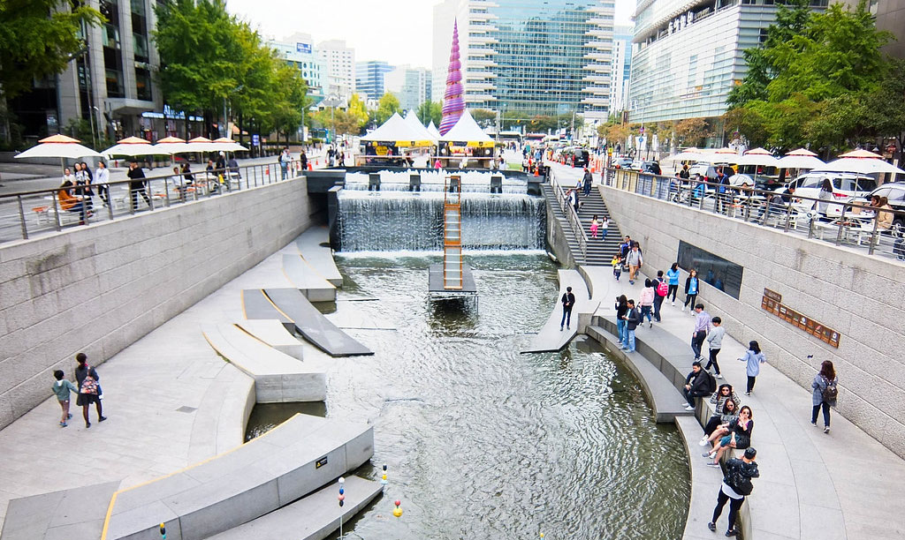
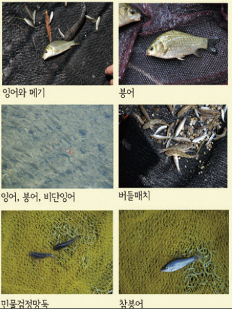

청계천소개  청계천(淸溪川)은 대한민국 서울특별시 내부에 있는 지방하천으로, 한강 수계에 속하며 중랑천의 지류이다. 최장 발원지는 종로구 청운동에 위치한 ‘백운동 계곡’이며, 남으로 흐르다가 청계광장 부근의 지하에서 삼청동천을 합치며 몸집을 키운다. 이곳에서 방향을 동쪽으로 틀어 서울의 전통적인 도심지를 가로지르다가, 한양대학교 서울캠퍼스 옆에서 중랑천으로 흘러든다. 발원지에서부터 잰 본류의 길이는 10.92 km, 유역 면적은 50.96 km²이나, 백운동 계곡 언저리를 제외한 상류 2.50 km 구간은 일제강점기 이래 전면 복개되어 타 용도로 전용되는 등 사실상 하천의 기능을 상실하였다. 현재는 서울 이곳저곳에서 취수한 물을 중류의 청계광장에서 하루에 40,000 세제곱미터씩 인공적으로 방류하는 형태로 하천을 유지하고 있다. 발원지의 계곡은 서울특별시 기념물로 지정되었으며, 청계광장에서 중랑천 합수머리까지의 중·하류 8.12 km 구간은 서울시설공단의 관리 하에 공원으로 쓰인다. 청계천다리 청계천 다리 모전교 : 청계천에서 처음 만날 수 있는 다리로, 무교로를 남북으로 잇는다. 광통교 : 복원하면서 완전히 새로운 돌로 만든 것이 아니라 그 역사적 의미를 기념하기 위해 기존에 남아 있었던 돌을 다리와 석벽에 같이 배치를 하여 재조합하여 만들었다. 1958년 청계천 복개와 함께 도로 밑에 묻혔던 것(광교네거리 지하)을 청계천 복원과 함께 복원하였다. 그리고 사적 제 461호로 지정했으며, 표지석을 세워 두었다. 세월교 : 광교와 광통교 사이에 있는 하천 내부 보도용 다리이다. 광교 : 조선시대 광통교 터에 위치하며, 주황색으로 칠해졌다. 우정국로와 남대문로를 남북으로 잇는다. 장통교 : 도보 전용 다리로, 조선 시대의 장통교를 계승했으나 제대로 복원되지는 않았다. 공사 당시 임시 명칭은 관철교였다. 삼일교 : 삼일대로를 남북으로 잇기 때문에 삼일교라고 이름 붙였다. 수표교 : 장충단공원에 옮겨진 옛 수표교를 옮길 자리에 도보를 위해 임시로 지은 철제 다리이다. 하지만 기존의 수표교를 청계천으로 다시 옮겨오는 데에 문제가 많아 계속 사용된다. 관수교 : 관수란 수위를 관찰한다는 의미며, 옛 준천사에서 청계천의 수위를 관측하였기 때문에 붙여진 이름이다. 돈화문로와 충무로를 남북으로 잇는다. 세운교 : 세운상가와 연결된다는 의미로 지어진 이름이다. 배오개다리 : 옛날 배나무가 심어져 있어 이름이 유래된 배오개(배고개)가 인근에 있어 그 이름을 땄다. 창경궁로를 남북으로 잇는다. 공사 당시 임시 명칭은 배오개교였다. 새벽다리 : 옛 재래시장에서 흔히 볼 수 있던 천막의 이미지를 막구조로 적용하여 동대문 재래시장의 역사성과 향수를 연출하였다. 근처 재래시장에서 이른 새벽에 많은 사람들이 지나다녔기 때문에 상징적으로 이름을 지었다. 마전교 : 부근에 우마를 팔고사는 마전이 조선시대에 있었기 때문에 이름을 붙였다. 동호로를 남북으로 잇는다. 공사 당시 임시 명칭은 창선방교였다. 나래교 : 평화시장 앞에 위치한 다리로, 나비의 힘찬 날개짓을 형상화 해서 동대문 의류 상권이 비상하라는 의미를 담았다. 공사 당시 임시 명칭은 나래1교였다. 전태일다리(버들다리) : 청계천에 자라는 버들에서 이름이 유래했으며, 이 다리 근처에서 분신하여 노동권 보장에 헌신한 전태일 열사를 기리기 위하여 2012년 11월 1일부터 명칭을 병용하고 있다. 오간수교 : 조선시대에 있던 오간수문에서 이름이 유래했으며, 율곡로와 장충단로를 남북으로 잇는다. 맑은내다리 : 인도 전용 다리로, 청계천을 순우리말로 바꿔 청계천을 상징할 수 있는 명칭으로 결정했다. 패션 중심의 상징성을 주기 위해 나비가 날개를 편 모습으로 지어졌다. 공사 당시 임시 명칭은 나래2교였다. 다산교 : 다산로에서 이름이 유래하였으며, 지봉로와 다산로를 남북으로 잇는다. 공사 당시 임시 명칭은 푸른내다리였다. 영도교 : 전통 대청양식을 도입한 아치교이다. 황학교 : 황학동에 위치한 것이 그대로 이름이 되었으며, 난계로를 남북으로 잇는다. 비우당교 : 조선 세종 때 청백리인 하정 류관의 집인 비우당(庇雨堂)을 이름으로 삼았으며, 하정로와 마장로19길을 남북으로 잇는다. 공사 당시 임시 명칭은 비우교였다. 무학교 : 무학로를 남북으로 이으며, 무학로에서 이름이 유래하였다. 두물다리 : 정릉천이 청계천과 만나는 데서 이름을 지었으며, 다리의 모양도 두 개의 물이 만나는 형상을 이뤘다. 고산자교 : 고산자로를 남북으로 이으며, 고산자로에서 이름이 유래했다. 신답철교 : 중앙선의 철교이다. 일제강점기에는 마장동철교, 청계천 복개 당시에는 마장철교로도 불렸다. 청계천박물관 청계천 박물관 관람 시간 구분 하절기 동절기 평일 09:00 ~ 19:00 09:00 ~ 19:00 토/일/공휴일 09:00 ~ 19:00 09:00 ~ 19:00 휴관일 1월 1일, 매주 월요일 관람시간 종료 30분전까지 입장하실 수 있습니다. 관람료 : 무료 주차시설 주차공간 : 소형차 기준 40대 주차요금 : 5분당 250원 승용차요일제 의무시행에 따라 전자태그 부착차량만 이용하실 수 있습니다. (단. 토·일·공휴일 제외) 청계천박물관은 서울특별시 승용차 요일제 의무시행기관입니다.아래의 경우 청계천박물관 주차시설을 이용하실 수 없음을 알려드립니다.1) 승용차요일제에 참여하지 않는 차량 2) 승용차요일제 참여차량의 경우 해당요일 장애인차량은 50%할인된 주차요금으로 적용됩니다. 편의시설 노약자는 박물관 내 엘리베이터를 이용해 4층 전시실로 올라가실 수 있습니다. 1층 안내데스크에 문의하시면 휠체어, 실버카, 유모차를 이용하실 수 있습니다. 안내전화 : 02-0000-0000 동식물 동식물 청계천에는 다양한 천변식물이 있으며 특히 물가에 키 큰 추수식물인 물 억새로 인해 물길조망을 저해하고 있어 물길조망 개선내용을 위하여 청계천 상류지역은 키 작은 초화류 위주로 교체 식재및 버드나무등은 전지를 시행하고 있으며, 중하류지역은 주요 물길조망장소에 대햐여 정기적으로 풀 깍기를 시행하고 있습니다. 청계천에는 2013년 기준 어류 13종 식물이입종 280종등이 서식하고 있습니다 